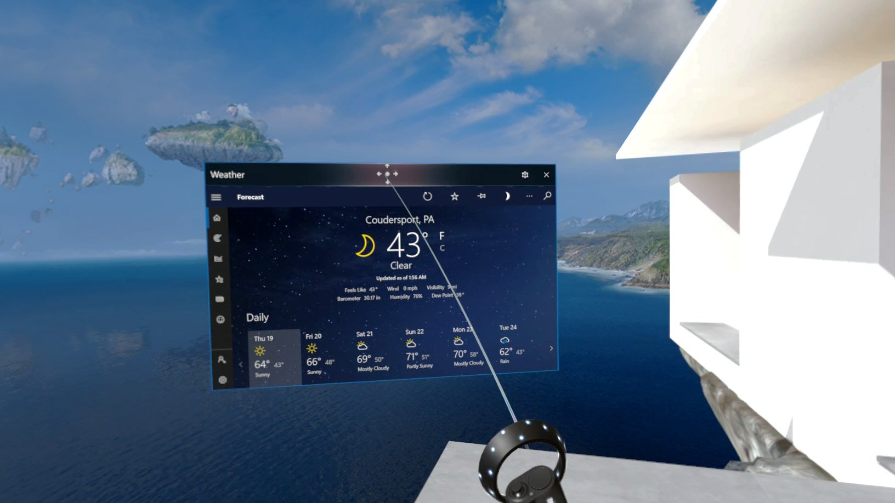
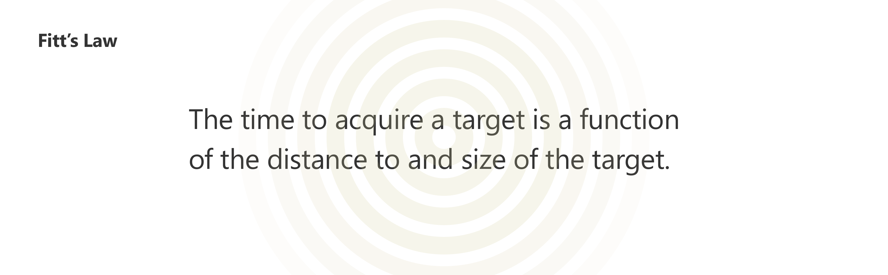

Spatial UI (HoloLens)
- Role: Senior Product Designer
- Responsibilities: Concept explorations, information architecture, interaction exploration, visual and motion design explorations
Outcomes:
- Three patents filed to protect Microsoft IP.
- Increased HoloLens developer signup at Microsoft 2018 Build by 5%.
The Windows NEXT design team was a small incubation team that was tasked to come up with innovative ideas that connect the Windows desktop and HoloLens experiences.
As the Senior Product Designer in the Windows NEXT team, I embarked on a groundbreaking journey to establish a pioneering connection between the world of 2D desktop experience and the immersive realm of mixed reality. Faced with the suboptimal interaction between HoloLens and Universal Windows Apps, I set out on an explorative effort to enhance the experience of Windows apps in the HoloLens environment.
As can be seen in the screen above, the small size of the UI controls in the app window negatively impact user's performance and causes muscle fatigue.
As the driving force behind this endeavor, I took charge of the UX exploration, delving into the intricacies of interaction design within 3D space using 3DS Max. Collaborating with a skilled motion designer, we brought our vision to life, producing a captivating video that showcased the culmination of our efforts. Additionally, I led the team's patent initiative, resulting in the filing of three patents to safeguard Microsoft's valuable intellectual property.
To begin, I focused on the desktop Mail app, breaking it down into distinct functional zones. I meticulously explored how interaction with each zone could be optimized within the VR/AR space. For instance, I recognized the challenges users faced with content commanding, where they had to employ a 6-DOF controller to target small buttons located far from their physical position. This interaction proved error-prone and time-consuming.

In pursuit of a solution, I embarked on an exploration that revolutionized the user experience. I devised a method that allowed users to effortlessly summon content to their fingertips, mimicking the natural actions one would perform in the real world. Through a captivating motion study, I showcased a first-person point of view experience, where the content was seamlessly summoned to a 6-DOF controller, enabling users to interact with it in a more intuitive and immersive manner.

Through my relentless innovation, I pushed the boundaries of what was possible, seamlessly connecting 2D desktop content to the captivating world of mixed reality. This groundbreaking endeavor not only enhanced the interaction between Windows apps and HoloLens, but also solidified Microsoft's position as a leader in the ever-evolving realm of immersive technology.